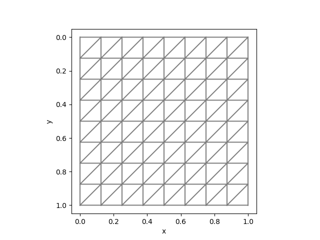
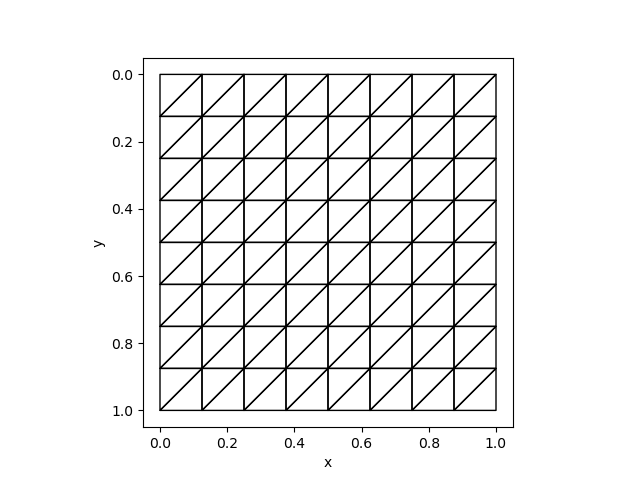

Adding Custom Operators for Unstructured Meshes
This tutorial describes how to develop custom operators for unstructured meshes.
PoreFlow uses MFEM as the backend for assembling finite element matrices. However, users, as well as custom operator developers, do not need to know how to use MFEM. PoreFlow has provided an easier interface to essential data structures for assembling finite element matrices. The data structure can be assessed in C++ (see Mesh) and the header files are located in deps/MFEM/Common.h. As the structured mesh utilties, we do not expose the APIs for Julia users, and therefore if some operators are lacking, users must modify the source codes of PoreFlow.
The basic workflow is to go into deps/MFEM directory. Then
- Make a new directory to add all source codes related to your custom operator.
- Generate templated files using
customop. - In your source code, do remember to include
../Common.h, which exposesmmeshfor all necessary data structures. - Add your source code file names to
deps/MFEM/CMakeLists.txt. - Recompile PoreFlow or run
ninjaindeps/MFEM/build. - Test your code. Note you need to replace the library path in
load_op_and_gradbyPoreFlow.libmfemin order to share the samemmeshthroughout the session.
To test unstructured meshes, we can compare the results with fenics. We can use the same mesh:
mesh = Mesh(8, 8, 1/8)The corresponding Python code is
mesh = UnitSquareMesh(8, 8, "left")| FEniCS | PoreFlow |
|---|---|
|  |  |
As an example, in deps/MFEM/ComputeInteractionTerm, we developed a custom operator to compute $\int_\Omega p \begin{bmatrix}\frac{\partial u}{\partial x} \\\frac{\partial u}{\partial y}\end{bmatrix} dx$ We can compute the values using FEniCS
from __future__ import print_function
from fenics import *
import matplotlib.pyplot as plt
import numpy as np
# Create mesh and define function space
mesh = UnitSquareMesh(8, 8, "left")
P = FunctionSpace(mesh, 'DG', 0)
U = FunctionSpace(mesh, "CG", 1)
# Define variational problem
u = TrialFunction(U)
p = TestFunction(P)
a = dot(p, u.dx(0))*dx
b = dot(p, u.dx(1))*dx
A = assemble(a).array().T
x = np.random.random((A.shape[1],))
f = np.dot(A, x)
A1 = assemble(b).array().T
f1 = np.dot(A1, x)
DofToVert = vertex_to_dof_map(u.function_space())
np.savetxt("fenics/f.txt", np.concatenate([f[DofToVert], f1[DofToVert]]))
np.savetxt("fenics/x.txt", x)The corresponding Julia code is
using ADCME
using LinearAlgebra
using PoreFlow
using DelimitedFiles
p = readdlm("fenics/x.txt")[:]
f = readdlm("fenics/f.txt")[:]
mesh = Mesh(8, 8, 1. /8)
f0 = compute_interaction_term(p, mesh)
sess = Session(); init(sess)
f1 = run(sess, f0)
@show norm(f - f1)We get the result:
norm(f - f1) = 3.0847790632031627e-16